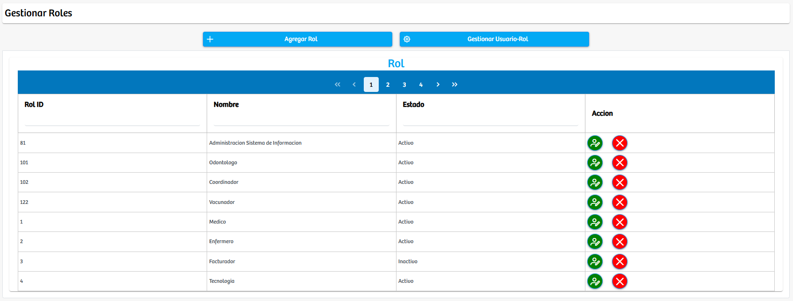
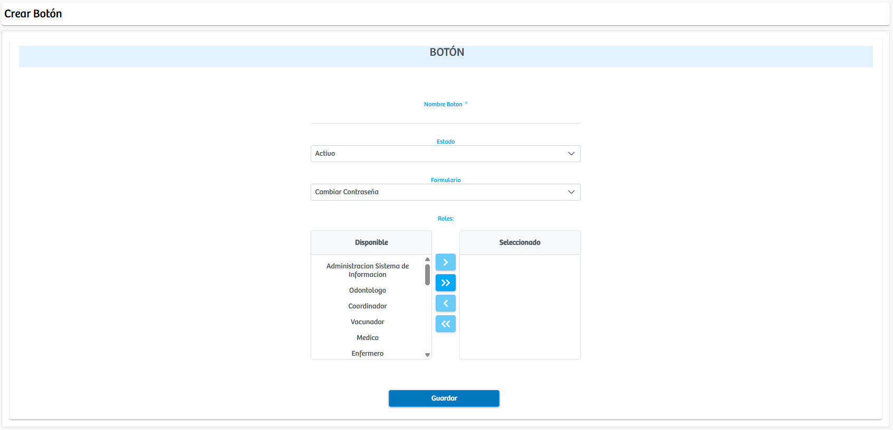

Modulos Sas-Web
Funcionalidades
Gestion de los Roles
En este modulo nos brindan las herramientas para crear y gestionar los Roles existentes dentro de la aplicacion SASWEB. Lo primero que podremos ver en esta interfaz son 2 botones: "Agregar Rol" y "Gestionar Usuario-Rol" los cuales sirven respectivamente para agregar nuevos roles a la aplicacion y para darle manejo a los usuarios con sus respectivos roles dentro de la app. Luego de estos botones tendremos acceso a la tabla donde se puede visualizar la informacion impoortante de los roles como: RolID, Nombre, Estado y las acciones como editar y eliminar para gestionar los registros.
Luego de presionar el boton: "Agregar Botón" se abrira una nueva vista. En la cual podremos crear un boton nuevo, aqui podremos elegir el nombre, el formulario donde va a aparecer y los roles de usuario que pueden acceder a el.
